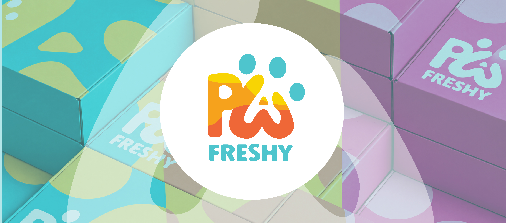
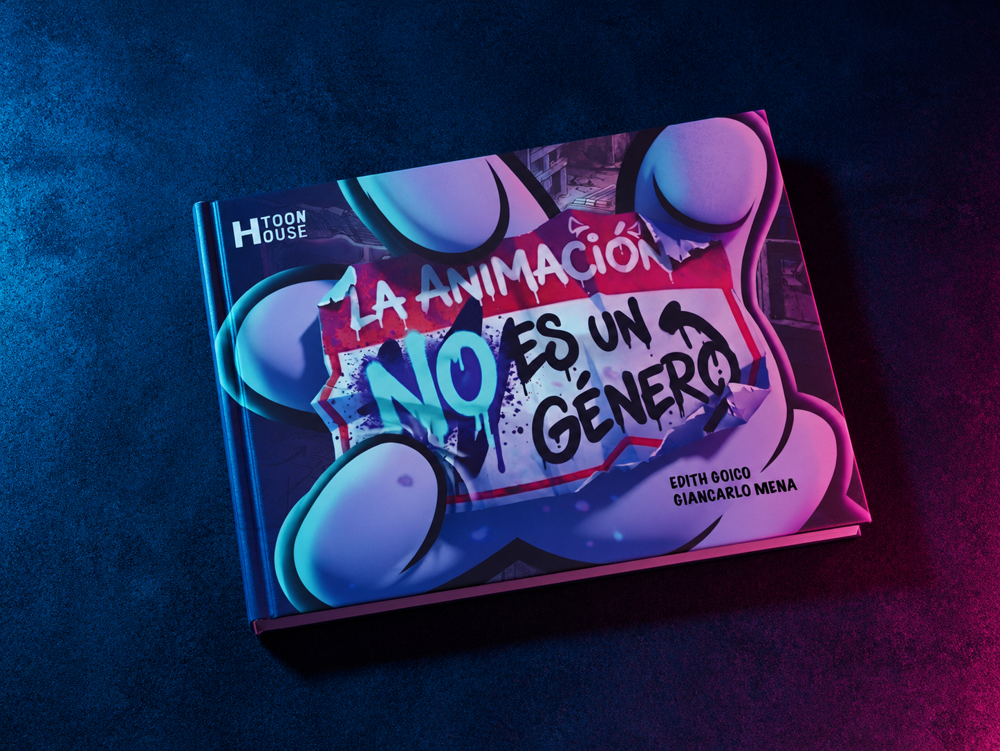
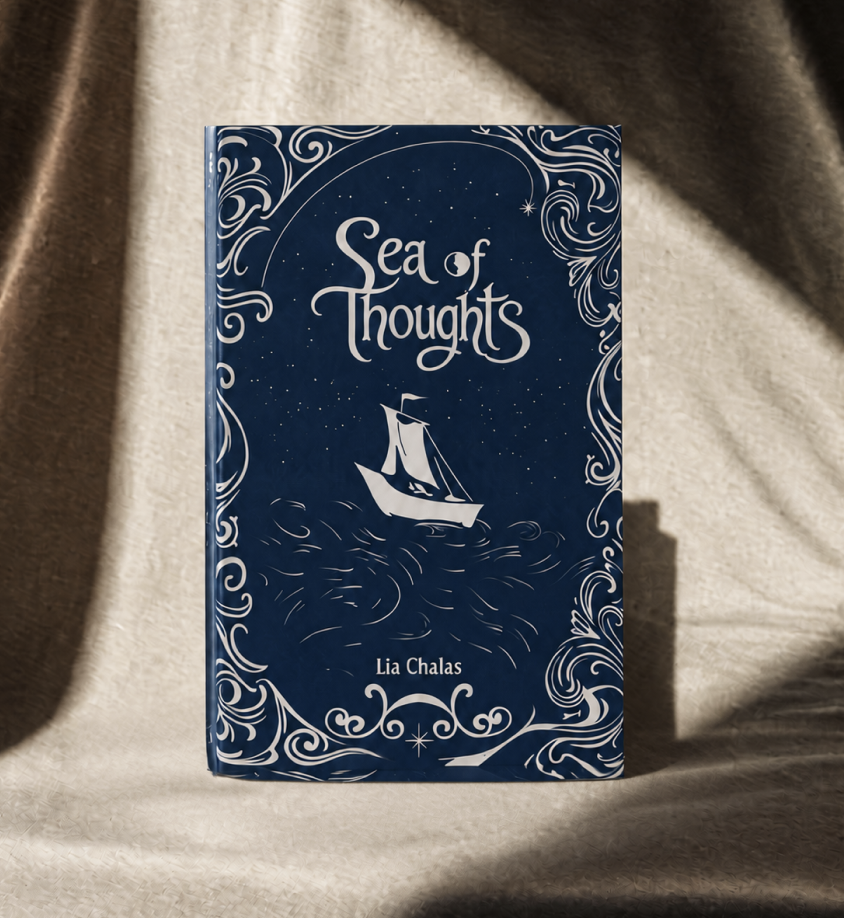
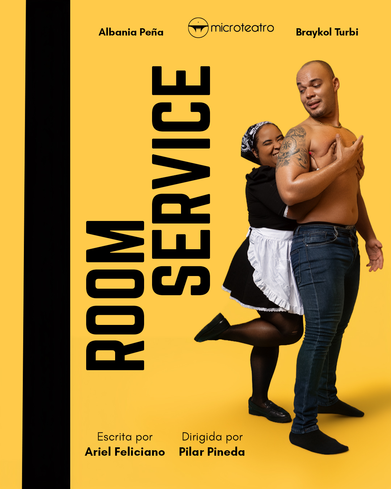
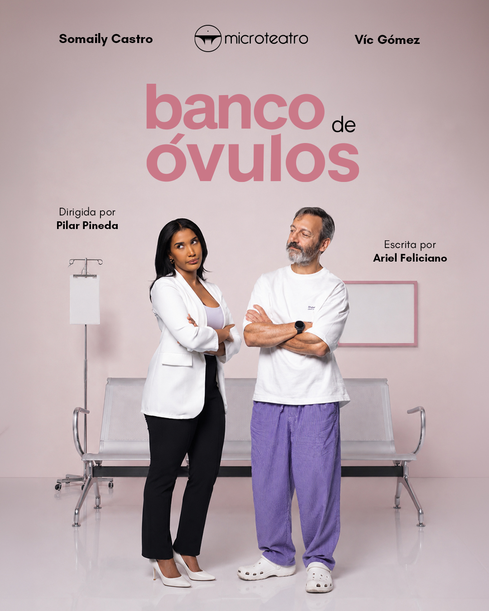
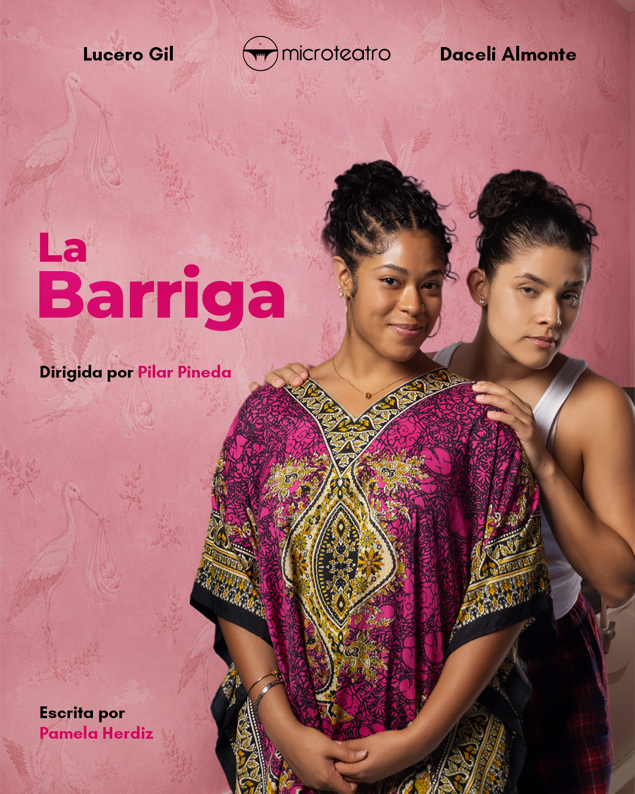
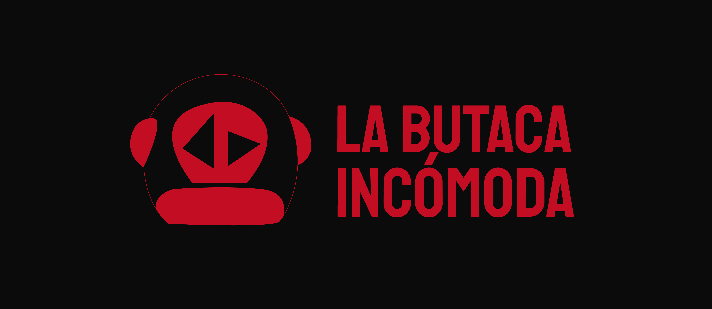
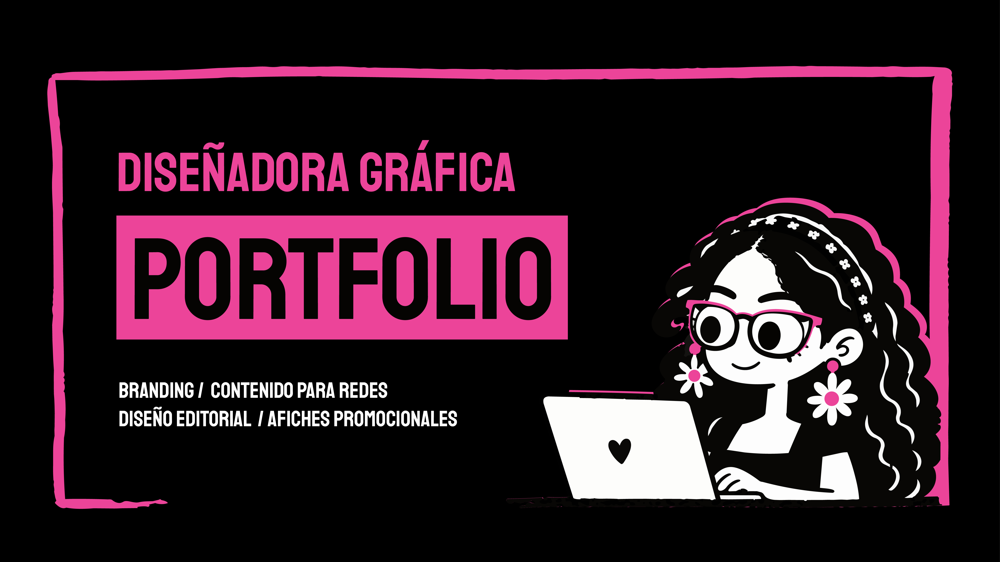
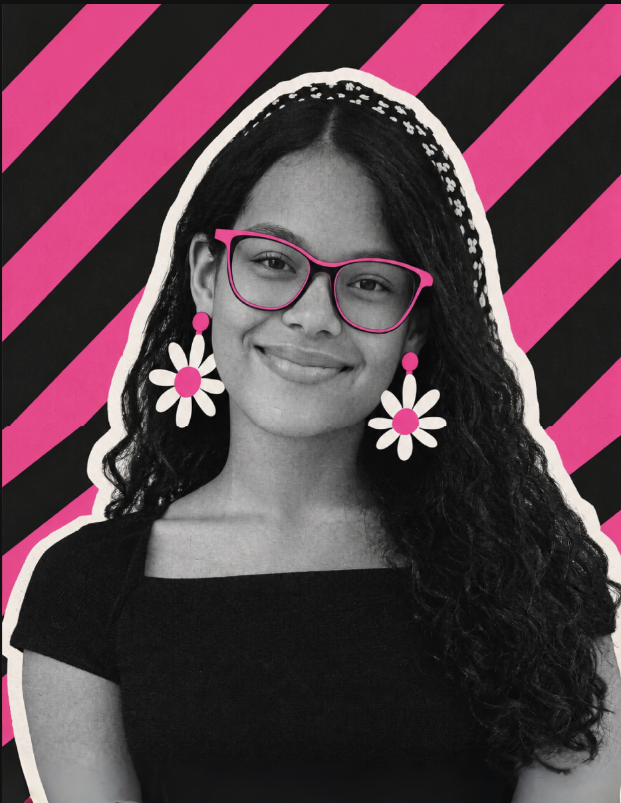
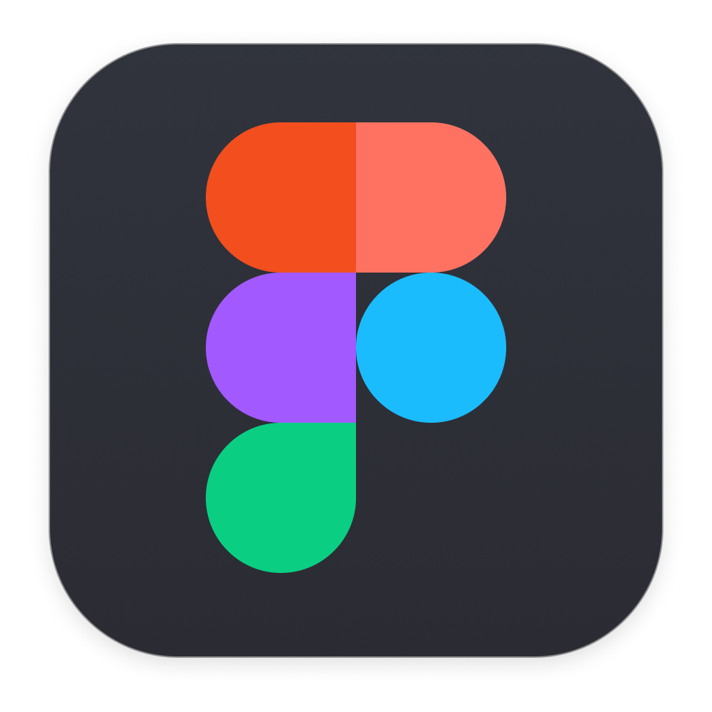

Selected work















I'm Edith Goico, a Dominican graphic designer working across branding, editorial design, and poster design. I've worked on projects ranging from complete brand identities to editorial covers and theatrical posters, always looking for ways to turn ideas into clear and engaging visual work.
I have a technical degree in Audiovisuals and Entertainment and am currently pursuing a degree in Film and Multimedia Production. I currently work as a freelance designer, collaborating with clients and creatives.
Let's give shape to your ideas.



